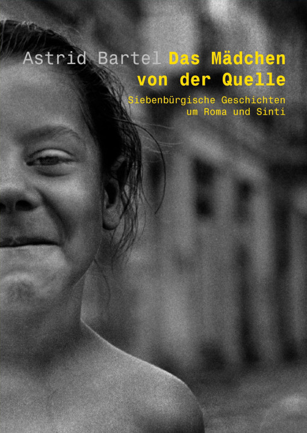

Das Mädchen von der Quelle

Immer wieder kreuzten Zigeuner den Weg der Erzählerin. Sie wurden zu einem
wesentlichen Teil ihres Lebens: verwirrende, schmerzliche, aber auch
bereichernde Begegnungen. Man war sich zu Anfang völlig fremd. Doch dann
näherte man sich misstrauisch, aber neugierig und stellte am Ende überrascht
fest, wie sehr sich Wünsche und Vorstellungen ähnelten.
Astrid Bartel erzählt Geschichten mit viel Heiterkeit und oft mit einer
liebenswerten Ironie. Sie hat ihre Kindheit und Jugend in Hermannstadt / Sibiu
in Rumänien verbracht. Nach einem Germanistik- und Geografiestudium in Köln
lebt sie nun mit ihrem Mann und vier Söhnen in Berlin. Die bunten,
eindringlichen Erlebnisse der Jugend sind ihr bis heute unvergessen geblieben.
Astrid Bartel: Das Mädchen von der Quelle
Geschichten um Roma und Sinti
hora-Verlag, Hermannstadt / Sibiu, 2005
162 S., 11 Zeichnungen
ISBN 973-8226-45-7
13.50 €
Bestellmöglichkeiten:
Weiteres über „Das Mädchen von der Quelle”: